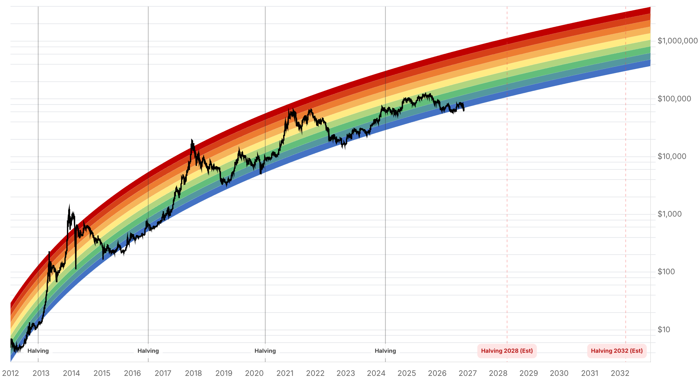

Reporte financiero
BTC cotiza en vivo a USD 61.882,94 (07:18 UTC), prácticamente plano frente al cierre previo de USD 61.904,76 (-0,04%) -pero -2,64% frente al precio en vivo de ayer (USD 63.560,29), continuando la racha bajista-. El Fear & Greed Index subió apenas a 12 ('Extreme Fear', venía de 10 ayer), sin salir de la zona de miedo extremo que acumula varias semanas. La novedad más relevante del día son las minutas de la reunión de la Fed del 27-28 de octubre, publicadas hoy a medianoche UTC: revelan que la decisión de mantener tasas (voto 10-2) fue, en palabras de varios participantes, una 'decisión a regañadientes', que 'casi todos' los funcionarios consideraban que subir tasas nuevamente 'podría ser apropiado', y que algunos plantearon evaluar un alza de 50 puntos básicos (no solo 25) para la reunión del 9 de diciembre -el gobernador Christopher Waller había respaldado públicamente esa opción de 50pb en CNBC-. CME FedWatch ubica la probabilidad de un alza de 25pb en 94,7%-96,4% según el snapshot, profundizando la tendencia ya reportada ayer (92% el 19-nov), con la novedad de que ahora la discusión interna de la Fed es sobre el tamaño del alza, no solo su dirección. La segunda novedad confirmada es que los flujos de ETFs de bitcoin, que ayer no se pudieron verificar para el 17 y 18 de noviembre, sí se lograron confirmar hoy con una fuente confiable (tftc.io, datos diarios por fondo): neto de -USD 239,9M el 17-nov (liderado por salidas de IBIT de -USD 209,5M) y de -USD 306,4M el 18-nov (IBIT -USD 148,7M, FBTC -USD 69,3M, BITB -USD 36,6M, entre otros) -revirtiendo por completo el breve ingreso neto de +USD 8,0M del 16-nov ya reportado ayer-; no hay dato disponible aún para el 19-nov. Sobre técnica de precio: un análisis de mercado (OKX Orbit, 20-nov) señala que BTC tocó USD 62.063 a medianoche, a solo USD 57 del mínimo del domingo (USD 62.006), con un RSI diario de 19,95 (sobrevendido) tras seis caídas semanales consecutivas -una racha que, según la misma fuente, solo se había dado dos veces antes en la historia del activo-; un cierre por debajo de USD 62.000 abriría paso a un próximo objetivo técnico de USD 58.500. No hay novedades verificables desde el reporte de ayer sobre la exclusión de Strategy (MSTR) de los índices MSCI (sigue efectiva al cierre del 30 de noviembre, sin cambios), la gobernanza de Nvidia, la Clarity Act (sigue estancada en el Senado), BTCPay Server, la apelación del Reino Unido sobre los 61.000 BTC, Cantor Fitzgerald, ni el reclamo no verificado sobre Irán.
El precio en vivo de BTC-USD (Yahoo Finance, 07:18 UTC) es de USD 61.882,94, -0,04% vs. el cierre previo de USD 61.904,76 (rango del día: USD 61.326,04 a USD 62.437,70) -prácticamente sin variación intradía-. Frente al precio en vivo de ayer (USD 63.560,29), el cambio es de -2,64%. El Fear & Greed Index de alternative.me subió levemente a 12 hoy (venía de 10 ayer), sin salir de la categoría 'Extreme Fear' que acumula ya varias semanas. Un análisis técnico publicado hoy (OKX Orbit) señala que BTC tocó USD 62.063 a medianoche UTC, a solo USD 57 del mínimo del domingo (USD 62.006), con un RSI diario de 19,95 -zona de sobreventa-, tras seis caídas semanales consecutivas, una racha que según la misma fuente solo se había registrado dos veces antes en la historia de bitcoin. Un cierre por debajo de USD 62.000 abriría paso, según ese análisis, a un próximo objetivo técnico de USD 58.500.
Las minutas de la reunión del 27-28 de octubre de la Fed se publicaron hoy a medianoche UTC. Revelan que, pese al voto 10-2 de mantener tasas, varios de los funcionarios que apoyaron el hold calificaron la decisión como 'a regañadientes'; los dos disidentes ya pedían un alza en ese momento; y 'casi todos' los participantes consideraban que nuevas alzas 'podrían ser apropiadas'. La novedad frente al reporte de ayer es que algunos funcionarios plantearon evaluar explícitamente un alza de 50 puntos básicos (no solo 25pb) para la reunión del 9 de diciembre -el gobernador Christopher Waller ya había respaldado públicamente esa opción en CNBC y, en un discurso en Londres el 10 de noviembre, condicionó su apoyo a un alza de 50pb a que la inflación núcleo de octubre llegara a 0,3% o más: 'In that case, I believe a 50 basis point hike in the policy rate should be considered at the December meeting' -esa condición se cumplió, según el dato de inflación núcleo de octubre ya conocido-. CME FedWatch ubica la probabilidad de un alza de 25pb en 94,7% (snapshot post-minutas) a 96,4% (snapshot pre-minutas, con 3,6% para 50pb); ninguna fuente de hoy reporta aún una probabilidad desagregada de 50pb post-minutas. El cambio de régimen de 'recorte' a 'alza' ya reportado ayer se profundiza hoy hacia una discusión sobre el tamaño del alza.
El reporte de ayer no pudo verificar con confianza los flujos diarios de ETFs de bitcoin para el 17 y 18 de noviembre, por fuentes que resultaron estar mal fechadas. Hoy se logró confirmar con una fuente que publica datos diarios por fondo (tftc.io, tracker de flujos de ETF de bitcoin en vivo): el 17 de noviembre el flujo neto fue de -USD 239,9M (IBIT -USD 209,5M; GBTC -USD 17,7M, ARKB -USD 13,1M, BRRR -USD 3,6M; parcialmente compensado por MSBT +USD 2,9M y BTC +USD 1,1M), y el 18 de noviembre fue de -USD 306,4M (IBIT -USD 148,7M, FBTC -USD 69,3M, BITB -USD 36,6M, ARKB -USD 19,3M, GBTC -USD 20,3M, BTC -USD 10,5M, HODL -USD 1,8M). Juntos, estos dos días revierten por completo el breve ingreso neto positivo de USD 8,0M del 16 de noviembre ya reportado ayer -IBIT fue el mayor impulsor en los tres días, con ingreso el 16-nov y salidas grandes el 17 y 18-nov-. La fuente consultada no tenía aún una fila de datos para el 19 de noviembre al momento de esta consulta.
La exclusión confirmada de Strategy (MSTR) de los índices MSCI sigue efectiva al cierre del 30 de noviembre, sin novedades adicionales desde ayer. Tampoco hay desarrollos nuevos sobre la gobernanza de Nvidia más allá de lo ya reportado (comité de Seguridad Nacional y Control de Exportaciones, creado el 17-nov). No hay información nueva y confiable sobre la Clarity Act (sigue estancada en el Senado, sin alcanzar los 60 votos de cloture), BTCPay Server, la apelación del Reino Unido sobre los 61.000 BTC, Cantor Fitzgerald, ni el reclamo no verificado sobre un ataque a un radar en Baréin mencionado en ediciones anteriores -se repite brevemente para que quede constancia de que se revisó, no porque haya cambiado.
| Periodo | Valor |
|---|---|
| 14 nov | 64128.05 |
| 15 nov | 65305.06 |
| 16 nov | 64855.84 |
| 17 nov | 64893.95 |
| 18 nov | 62987.27 |
| 19 nov | 61901.82 |
| 20 nov (en vivo) | 61882.94 |
| Periodo | Valor |
|---|---|
| Hoy | 12 |

“In that case, I believe a 50 basis point hike in the policy rate should be considered at the December meeting.”
“Either surprise means volatility, and BTC will move with the decision, not the chart.”
El precio está prácticamente plano en el día (-0,04%) pero acumula -2,64% frente al precio en vivo de ayer y seis caídas semanales consecutivas, con RSI diario en zona de sobreventa (19,95). El catalizador dominante sigue siendo el giro hawkish de la Fed, que hoy se profundiza: las minutas de octubre muestran que varios funcionarios plantearon un alza de 50pb (no solo 25pb) para el 9 de diciembre, con el gobernador Waller respaldando esa opción públicamente. Técnicamente, un cierre por debajo de USD 62.000 abriría paso a un objetivo de USD 58.500 según el análisis citado.
Los flujos de ETFs de bitcoin, confirmados hoy para el 17 y 18 de noviembre (-USD 239,9M y -USD 306,4M respectivamente, liderados por salidas de IBIT), revierten el breve respiro del 16-nov y refuerzan la narrativa de salida de capital institucional de las últimas semanas -sin que eso implique necesariamente una tendencia de mediano plazo, dado lo volátil que han sido estos flujos día a día-. La eliminación de Strategy (MSTR) de los índices MSCI sigue pendiente de digerirse hacia el 30 de noviembre, sin cambios desde ayer.
Sin cambios en los objetivos de precio de largo plazo ya reportados en ediciones anteriores (Citigroup, Bernstein, Standard Chartered, Tom Lee, NYDIG, Armstrong, piso de costo de producción de JPMorgan en USD 94.000). Con el precio spot actual en USD 61.882,94, BTC se mantiene muy por debajo de ese piso de costo de producción, ampliando levemente la brecha ya señalada en ediciones anteriores. La discusión de la Fed sobre un alza de 50pb (en vez de 25pb) en diciembre es un elemento macro que, de confirmarse, podría extender esa brecha.
Las minutas de hoy muestran que la discusión interna ya no es solo 'recorte vs. alza' sino 'alza de 25pb vs. 50pb'. Un alza de 50pb confirmada endurecería las condiciones financieras de forma más abrupta que un movimiento de 25pb, con mayor impacto negativo esperado en activos de riesgo como bitcoin. Seguir declaraciones de miembros del FOMC (además de Waller) en las próximas semanas.
Según el análisis técnico citado hoy, BTC cotiza a centavos de su mínimo reciente (USD 62.006) con RSI en zona de sobreventa (19,95). Un cierre diario por debajo de USD 62.000 abriría, según esa misma fuente, la puerta a un siguiente nivel de soporte en USD 58.500. La sobreventa no garantiza un rebote inmediato -ya se señaló en ediciones anteriores que condiciones de sobreventa no implican necesariamente que la baja terminó-.
Los flujos diarios de ETFs de bitcoin han sido muy volátiles en las últimas dos semanas (+USD 8,0M el 16-nov, -USD 239,9M el 17-nov, -USD 306,4M el 18-nov). Antes de leer un solo día como señal de tendencia, esperar confirmación de varios días consecutivos en la misma dirección.